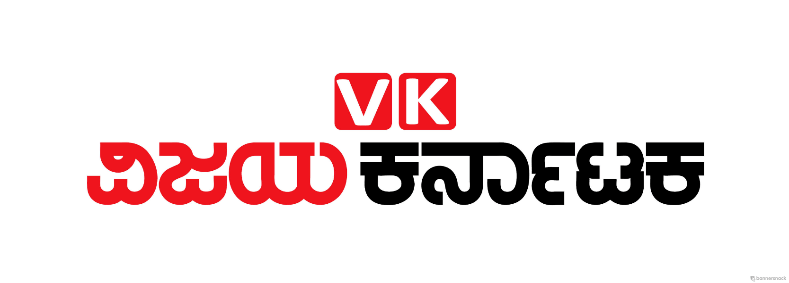

Who are we?
Let’s Be The Change (LBTC) is a non-profit organization which aims to build a cleaner and healthier society by working with the people and the Government. LBTC was started by Anirudh S Dutt on 5th July 2013. We have been growing ever since, with over 250 successful events, including cleanliness drives, awareness programmes, spot fixes, pet adoption drives and so on. We are mainly comprised of energetic youngsters whose only aim is to make Bengaluru a better place for the society. We are a bridge connection between the Municipal Corporation (BBMP) and the Citizens.
"We are the change people have been waiting for."
"We are the change people have been waiting for."
Vision
Mission
"To make our society a happier and better place by being the change that is needed."
What we do
- • We host “Cleanathon” drives (eradication and beautification of garbage dumps) in Bengaluru. We work towards making Bengaluru free from garbage dumps, one stretch at a time.
- • We conduct free Clay Ganapathi Workshops. In the past 2 years, over 3500 people have made their own Ganapathi Idols, for worship during the festival season.
- • We have tied-up with Precious Paws Foundation to organize fundraising events for injured stray dogs, pet adoption (stray, homeless pups).
- • On Television, Radio, and Social Media, we spread awareness about the importance of waste segregation and things that the average citizen can do to keep their localities clean.
- • In our YouTube channel, we demonstrate simple steps to keep your surroundings clean, various segregation techniques, and also have videos about traffic rules, common traffic conventions that people should follow, chain-snatching etc.
Our Team
Anirudh S Dutt
Founder, President
Prajwal GV
Vice President
Srivatsa Gargesh
General Secretary
Lohit B N
Treasurer

Vyshak Iyengar
Secretary
Amar Prabhu
Secretary
Nidhish Kudwalli
Secretary

Vinay Vasist
Secretary
Avinaasha Shastry
Board Member
Yoshita Ramesh
Board Member
Bhuvan Surya Purushothama B N
Board Member
Srinidhi Chandra
Board Member
We're featured on

- 